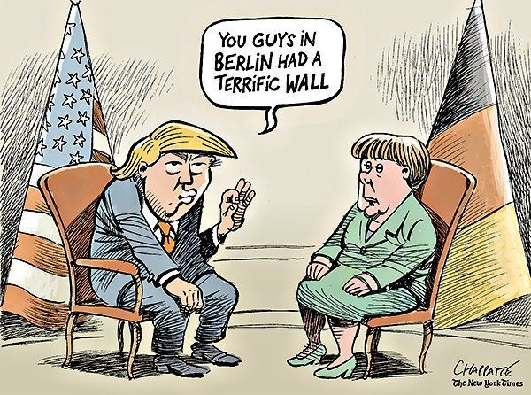
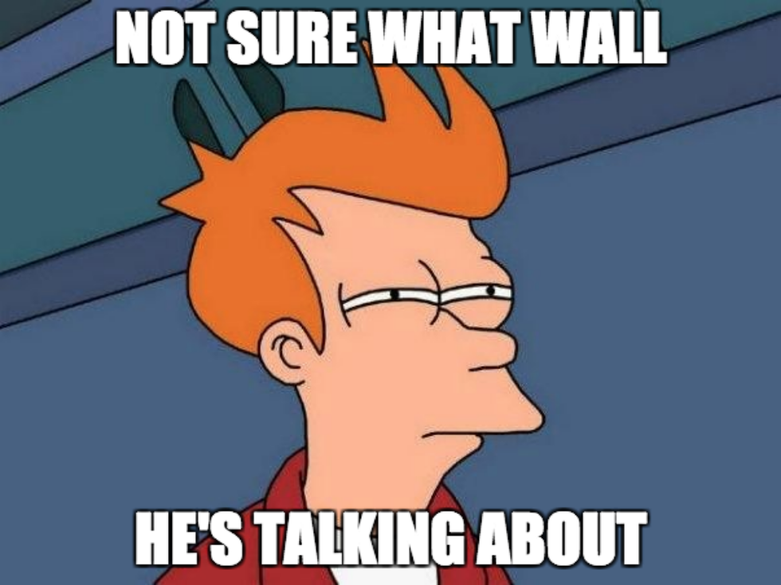

Visualizing Wars:
The Face of Geopolitics
by Armand Boschin, Cyril Wendl and Francis Damachi
Most of the 90s kids' ideas of political conflicts are largely based on the terrorist attack of
9/11. As most of the world affairs rely deeply on past relationships between nations, the lack of
historical awareness is a threat to an entire generation's ability to critically analyze what they read.

A piece of (fake) news

A 90s kid
As conventional journalism is being superseded by mass consumption of social media which are often likely to convey biased or fake news, it seems crucial to reassess our understanding of the more recent world conflicts. The aim of this data story is to lay down some historical landmarks of world politics.
The end of the 1980s represent a turning point in history with the end of the Cold War. Many people hoped this would lead to a New World Order. Has it been the case? Which conflicts have taken place since then? How has the world violence evolved since 1989? Let's find answers in the data.
Our work is based on the Uppsala Conflict Data Program (UCDP) dataset which records all lethal events having taken place in any country (except Syria and North-Korea) from 1989 to 2016. Along the data story, some links are provided for further information. Furthermore, to understand more broadly the current economic and political stability, we also show economic data from the World Bank.
In the following, an event represents an incident where armed forces were used by an organised actor against another actor resulting in at least one direct death on either side.
Global Analysis
In order to get a raw sense of world peace, we think of two indicators, the total number of deaths and civilian deaths caused by armed events.
Death time series on a global scale
The obvious strongest outlier of all years is 1994 because of the Rwandan Genocide. In 1994, the opposition between the Hutus and the Tutsis (two ethnic groups) led to a massive genocide. There is no official record of the casualties but most sources agree on the UN estimation of 800'000 Tutsi victims in less than 100 days.
For comparison, the Holocaust caused about six million Jewish victims during Nazi Germany and the Khmer Rouges killed around 1.5 million people under Pol Pot's Democratic Kampuchea. The Rwandan genocide is the most deadly event in the post cold-war era. It is also ranked 7 among all the genocides in history.
Looking at conflicts on a global scale makes it hard to discern any general tendency. Instead, we can have a look at the figures on a regional scale.
Regional Analysis
The following figure provides details on the death tolls on a regional scale. For didactic purposes,
hovering on the bars reveals details about the conflicts happening in the corresponding year. A conflict is displayed
if it accounts for more than the 98% quantile of deaths during this year.
Take some time to get an idea of the most important conflicts in each continent.
Detailed deaths time series by region
Region
Details
Hover on a bar to obtain more information on conflicts.
The above confirms that Africa, the Middle East and Asia (mainly the western part of Asia) are the three
main regions marked by armed conflicts. It is also possible to look at major crises by looking at countries
which, during some years, experienced death tolls a 1000 times larger than the median number of deaths over all years.
By doing so, we get conflicts you might have already noticed by playing with the preceding figure (such
as the Bosnian war,
the Rwandan genocide,
the Yemeni Revolution)
but also the Mozambican Civil War (5222 casualties),
the Tajikistani Civil War (4571 casualties),
and some punctual crisis such as the Tianamen Square protests
in China in 1989 (2600 casualties).
The following map allows localizing the conflicts. We'll let you hang around on a fatal march then.
Countries
- Use the buttons
to activate the year slideshow or directly use the slider to visualize data for a given year.
- Click to see the sum of deaths for all years
- Click on to change the data between civilian and total deaths
- Hover on a country for some key numbers
- Click on a country to get more detailed information
- Click on the same country again to get back
Actors Analysis
In addition to a geographical analysis, it is interesting to study the actors causing the conflicts.
In the UCDP data set
the name of the actors but no additional information is given.
We enriched the set by scraping some key Wikipedia pages in order to get a list of armed actors and
information about them such as their ideology or official designation as terrorists. Then the scrapted data was matched and merged with
the actors using a Levenshtein string distance.
This allowed us to provide the following visualization of actors' involvement in conflicts. The bubbles
represent the sum of deaths an actor caused in all conflicts (excluding collateral victims). The sum
of civilians killed in conflicts in which the actor was involved is also provided for information in the detail view.
Note that the Government of Rwanda has been removed from the data set in the following visualization
because of the genocide, since it would have otherwise crushed all the other bubbles.
Actor Type
Actors
- The bubble colors indicate the type of actor. Some actors have several types, in which case the color corresponds to the most general one. For example, communists can also be liberation movements. Therefore, when selecting a cluster, the colors may be mixed.
- The bubbles size represents the number of total deaths caused by an actor, excluding collateral civil deaths.
- Hover on a bubble to see the actor's name
- Click on it to get more information
- If you see some bubbles jittering, do it like in a real war: end the fight by dropping a big actor in the middle. 😉
The bubbles indicate a tendency that governments seem to be responsible for the largest amount of deaths. However in many cases, governments might not be legitimate (lawfully or morally). The most important actor (except from the Government of Rwanda) is the Government of Afghanistan due to its war against the Talibans. This war caused more than 100'000 combatant victims.
From a historical point of view, it is important to note that because Syria is excluded from the data set, this story might not give a real insight into the most recent situation. Especially the Islamic State is not really important here and yet, the Battle of Mosul in Iraq caused more than 40'000 civilian casualties last July.
Conclusion
The goal of this data analysis project was to raise awareness for the global developments of the world peace. Through graphical visualization, new insights on complex data can be obtained.
The in-depth analysis of a large-scale dataset shows a number of major difficulties to understanding data: Being able to create links requires first and foremost a huge amount of data cleaning and standardization. Secondly, data can be enriched by merging it with external datasets and combining its features. Both have been crucial in this project to produce better visualizations.
Finally, the quality of the visualizations depends to a large extent on the possibilities, learning curve and ease of implementation of the used framework. We have enjoyed delving into this challenge, using various frameworks, programming tools and, most importantly, our minds to better understand the recent world history.
About us
Find us on GitHub